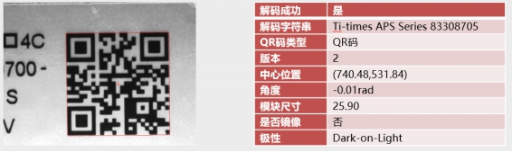
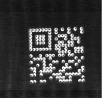
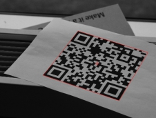
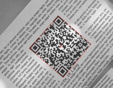
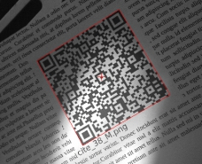
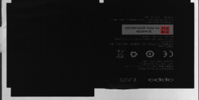

用于查找并解码图像中的QR码。

| 分类 | 参数名称 | 参数描述 |
|---|---|---|
| 属性窗口 | 是否启用ROI | ROI为“读码区域”，可以通过修改X、Y、W、H值来设置，也可以在Edit窗口中手动拖拽来设置。不启动时，软件自动设置ROI区域。 |
| 模块类型 | 条码的类型，分为方形以及圆形。 | |
| 模块的尺寸类型 | 用户根据实际图像中的条码类型选择对应的类型。包括常规尺寸、小尺寸、大尺寸以及极小尺寸。 |
|
| 条码查找个数 | 用户对查找结果的期望值 | |
| 启动光照非一致性补偿 | 减少光照导致的图像明暗不均。 | |
| QR形态学处理 | 对QR码进行简易的预处理，预处理的方法仅限于灰度形态学的开操作以及灰度形态学的闭操作。 |
|
| 对比度容忍度 | 对比度的可接受阈值 |
|
| QR开启边界约束 | 启用边界约束 |
|
| 开启对比度变化场景 | 启用对比度变化 |
|
| 开启原始分辨率 | 使用原始分辨率读码 |
|
| 阈值类型 | “全局自适应阈值”和“局部自适应阈值”两种，分别对应不同的计算方式，可根据实际要求进行选择。 |
|
| 图像窗口 | 输入图像 | 待读码的图像 |
| 读码区域 | 进行读码造作的矩形区域。 | |
| 数据链 | 输入图像 | 待读码的图像。 |
| 二维线性变换 | 读码区域接收二维线性变换以确保读码区域与QR码的相对固定。 | |
| 高级界面 | 无 |
| 分类 | 参数名称 | 参数描述 |
|---|---|---|
| 监视窗口 | 输入图像 | 输入图像的宽度、高度、像素大小。 |
| 结果数目 | 工具实际读码数目。 | |
| 所有读码结果 | 显示所有读码结果，包括条码区域、解码字符串及类型、条码极性、2D尺寸、模式类型、Cell尺寸等。 | |
| 执行结果 | 工具执行结果。 | |
| 执行时间 | 工具执行时间。 | |
| 图像窗口 | 输出图像 | 完成读码的图像 |
| 条码所在多边形区域 | 条码所在的区域 | |
| 执行结果 | 工具执行结果。 | |
| 数据链 | 结果数目 | 工具实际读码数目。与监视窗口中的“结果数目”是同一个参数。 |
| 所有读码结果 | 包括条码区域、解码字符串及类型、条码极性、2D尺寸、模式类型、Cell尺寸等。与监视窗口中的“所有读码结果”是同一参数。 |
预处理包括光照非一致性补偿、形态学处理两方面的操作。
对于点阵QR码，当条码模块中心出现“甜甜圈效应”时（如下图2所示），启动该项光照补偿功能。“甜甜圈效应”指的是模块中心灰度值和背景相近，与条码极性相反。

对于条码内部存在噪声的图像，可进行灰度形态学处理，可选择的操作有形态学开操作、形态学闭操作。
定位相关参数包括：模块类型（默认为方形）、模块尺寸（默认为常规尺寸）、对比度容忍度（默认为10）、是否开启边界约束（默认不开启）、是否开启对比度变化场景（默认不开启）、是否在原始分辨率搜索（默认不开启）。
模块尺寸参数根据实际图像中单个模块的像素尺寸进行调整，可选择常规尺寸、大尺寸、小尺寸、极小尺寸。如图3，QR码模块尺寸约60像素，可通过调整模块尺寸为大尺寸，进行读取。

边界约束是针对QR码边界附近存在干扰而进行更加细致的定位。默认不开启。如图4，QR码周围有大量文字干扰，可开启边界约束，以准确定位出QR码边界，从而完成读取。

对比度变化场景指的是QR码区域光照不均，局部对比度较高，局部对比度较低的情况，如图5。这种场景下，需开启对比度变化场景，并配合信号提取参数，开启局部自适应阈值，进行读取。

在原始分辨率下搜索是在QR码的模块尺寸较小(小于5像素)的情况下，为保证识别率，牺牲一定程度的效率所进行的设置。如图6，需开启在原始分辨率下搜索进行读取。

信号提取相关参数包括阈值类型（默认为全局自适应阈值）和水平、垂直分块数。
如上节所述，在对比度变化的场景下，需在定位相关参数设置中开启对比度变化场景，与之对应，需将信号提取的阈值类型改为局部自适应阈值，并相应地设置水平、垂直分块数（默认均为3），如图5。分块数依据QR码内部对比度变化的剧烈程度进行设置，分块数越多，深浅模块误判的概率越小，但相应的处理耗时越长。默认的全局自适应阈值状态下，不需要设置分块数。
无
参见“\Samples\读码工具.gvp”。